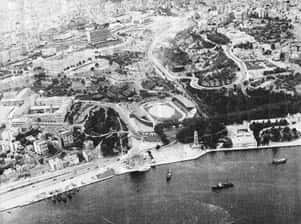

İstanbul’da İlk Modern Aydınlatılan Mekân Dolmabahçe Sarayı ve Dolmabahçe Gazhanesi
Gaz Kelimesinin Anlamı
Gaz kelimesi Latince kökenli “cahos”, Yunanca ise “khaos” kelimesinden gelmektedir. Ancak bu kelimeyi herkesin anladığı “gaz” manasında ilk defa Flemenk Jan Baptista van Helmont (1577 -1644) kullanmıştır. Gaz başlangıçta ısınmadan çok aydınlanma için kullanılmaktaydı. Bu yüzden çeşitli Avrupa dillerinde “aydınlanma gazı” anlamına gelen isimler verilmiştir: Örneğin İngilizce’de “şehir gazı” manasında “town gas”; Fransızca’da yine aynı anlamda “gaz de ville”; Almanca’da da “leuchtgas” kelimeleri kullanılmaktadır.
Osmanlı Devleti Batı’daki gelişmeleri yakından takip etmekte ve mümkün olanları transfer etmeye gayret göstermekteydi. Aşağıdaki tarihçesinden de anlaşılacağı gibi Avrupa’da şehirlerin gaz ile aydınlatılmasından bir süre sonra İstanbul’da da bu konuda gaz kullanımına başlanmıştır. Osmanlı Devleti transfer ettiği bu yeniliğin ismini de aynen tercüme ederek almıştır. Türkçe’de de gaz kelimesi kullanılarak, bununla yapılan aydınlatma için “gazla tenvîr” terimi kullanılmıştır. Gaz üretim mahallerine ise “gazhane” veya “gaz fabrikası” adı verilmiştir. Ancak kısa bir süre sonra gaz kelimesi “havagazı” şeklinde Osmanlı literatürüne girmiştir.
Havagazı İle Dünyada İlk Aydınlatma
Aydınlanma amacıyla maden kömüründen havagazı üreten ilk kişi Hollanda’nın Maastricht şehrinde doğan ve daha sonra Belçika vatandaşı olarak tanınan eczacı Jan Pieter (Jean-Pierre) Minc-kelers’dir. Deneylerine ilk defa 1753’te Louvain Üniversitesi’ndeki odasını aydınlatmakla başlattı. Jan Pieter maden kömüründen çıkan gazın yanıcı özelliğini keşfetmişti.
William Murdoch (1754-1839) da bu konuda yaptığı deneylerden olumlu neticeler aldı ve gaz üretmeyi başardı. Murdoch kömürden elde ettiği dumanı arıtıp sudan geçirerek yakınca alevin beyaz ve parlak ışık verdiğini gördü. Böylece gazın yanıcı özelliği dışında da kullanılabileceğini gösterdi. Bu yöntemi kullanarak 1792’de Redruth’daki evini, 1797’de Manchester polis merkezi binasının girişini ve Birmingham’daki Boulton ve Watt fabrikalarının çevresi ile 1805’te Lancashire’daki Salford’da pamuk imalathanesini aydınlattı. İlk defa boru ile birbirlerine bağlantılı on üç gaz lambası Londra’da 1807 yılında denendi. Havagazının kötü kokusu bu çalışmaların olumsuz boyutunu teşkil ediyordu. Murdoch bu amaçla gaz arıtma deneylerine de girişti. Nitekim evini aydınlattığı günlerde çok kötü kokan gazı dışarı atmak için bir arıtma tesisi kurarak bu deneylerinden de olumlu sonuçlar aldıysa da çalışmalarına ara verdi. Havagazı konusundaki çalışmalar bütün Avrupa’yı sarmıştı. Fransız Philippe Lebon’un da havagazını kullanıp Paris’i aydınlatmaya girişmesi Murdoch’un ara verdiği bu alandaki deneylerine yeniden dönmesi için teşvik edici bir sebep oldu. Ancak Philippe Lebon, bu icadı daha ileri götürerek gazın arıtılarak da üretilebileceğini ortaya koydu. O, bir tüpe koyduğu talaşı ıslak bezle ağzı kapalı bir şekilde şişede tutuşturduktan sonra oluşan gazı bezden geçirince, yanıcı özelliği olduğunu fark etti. Elde ettiği bu gaz “thermolamp” dediği ısı lambasında yanıyordu, fakat çıkan gazın kokusu yeterince giderilemedi.
Havagazının keşfine giden yolda ilk adımları atan ne Murdoch ne de Lebon bu icatlarından herhangi bir gelir edindiler. Fransa’da 1799’da ilk defa gaz yakma patentini alan Philippe Lebon’un faaliyetleri gösteri amacı dışına taşımamıştır. Örneğin 1801 yılında Paris’te bir caddeyi aydınlatma gösterisi yapmış, ardından Fransa’nın değişik yerlerinde ve Amerika Birleşik Devletleri’nde benzer gösteriler gerçekleştirmişti. Ne yazık ki 2 Aralık 1804’de Napolyon’un taç giyme merasimi esnasında bilinmeyen bir nedenle öldürülen Lebon’un çalışmaları yarım kaldı. Ancak eşi 1811 yılında kocasının yarıda bıraktığı işi yeniden ele alarak bir gaz şirketi kurdu. Kral XVIII. Louis’nin ısrarlı desteği sayesinde muhaliflerine rağmen Paris’teki ilk denemesini gerçekleştirdi.
Diğer taraftan İngiltere ve Amerika Birleşik Devletleri’nde havagazı ile sokakların aydınlatılması çalışmaları sürdürülüyordu. Örneğin Çek asıllı Winzler Avrupa şehirlerini dolaşarak bir gaz şirketi kurdu ve Londra sokaklarını aydınlatma işini üstlendi. Ancak halk yangın ve zehirlenme riski bulunan bu yeni aydınlatma giri-simlerine sıcak bakmıyordu. Buna rağmen Winzler ilk denemesini Londra’nın Petter Street isimli caddesinde inşa ettiği ilk gaz fabrikasında üretilen havagazı ile Westminster Köprüsü’nü aydınlatarak gerçekleştirdi. Avrupa’daki bu buluş kısa zamanda her tarafa yayıldı. Avrupa ve Amerika Birleşik Devletleri’nin önemli şehirlerinin ana caddeleri veya önemli sokakları gaz lambalarıyla aydınlatılır hale geldi. Bundan sonra gaz endüstrisinin gelişmeye başladığını görüyoruz.
1810’lu yıllar havagazı ile aydınlanma için bir dönüm noktası olmuş ve Amerika Birleşik Devletleri’nin Baltimore şehrinde bir sokak 1817 yılında gaz ile aydınlatılmıştı. Yine Belçika’nın başkenti Brüksel’de bu aydınlanma usulünün Place de la Monnaie ve Rue Neuve’de açılışı 24 Ağustos 1819 tarihinde gerçekleşti. İleriki yıllarda da bu girişimlerin devam ettiği görülmektedir. Kralın desteklediği Lebon’un eşinin şirketine rağmen, Avrupa’nın en gözde şehirlerinden Paris bu kervana gecikmeli olarak dâhil oldu ve havagazı ilk defa 1829 yılında kullanılarak bir sokak aydınlatıldı. Almanlar da bu konuda geç kalmışlardı; Berlin şehrinin havagazı ile aydınlatılması girişimi ancak 1826’dan sonra başlamıştı. Ancak bu usulle şehri aydınlatma 1960 yılına kadar devam ede gelmişti.
Belçika’nın Gand şehri 1827’de, Fontaine-L’Eveque şehri 1834’te, Louvain, Tournai ve Charleroi şehirleri 1835 ve Namur şehri ise 1835’te havagazı ile aydınlatılmaya başlanan şehirlerdendir.
Dünyada ticari amaçlı kurulan ilk havagazı şirketi Westmins-ter Gas Light and Coke Company olup 1812 yılında Great Peter Street’da bu işle uğraşmaya başladı. 1813 yılındaki yeni yıl törenlerinde Westminster Köprüsü şirket tarafından aydınlatıldı. Hala aynı adla çalışan bu şirket dünyanın en büyük ve en eski gaz şirketi olma özelliğine sahiptir. Amerika Birleşik Devletleri’nde ise Rembrant Peale ve diğer dört kişi 1816 yılında Baltimore’da Gas Light Compagny’yi kurdu. Amerika’da faaliyete geçen ilk gaz şirketi budur. Almanya’da ilk gaz üretme çalışmaları Hannover şehrinde 1825 yılında başladı. Almanya’da diğer ülkelere göre daha geç başlamasına rağmen 1870 yılına gelindiğinde kömür, odun ve diğer maddelerden gaz elde etmek için kurulan gazhanelerin sayısı 340’a ulaşmıştı.
Dolmabahçe Gazhanesi
Yaklaşık yüz on bin metrekarelik gayet geniş bir arazi üzerine kurulmuş olan Dolmabahçe Sarayı, ana mekân haricinde cami, harem ve veliaht daireleri, mâbeyn, tiyatro, ıstabl-ı amire yani has ahır, serasker dairesi, mutfaklar ve hazine-i hassa ile mefruşat dairelerinden meydana geliyordu. Bu da neredeyse kendi kendine yeten küçük bir şehir demekti. Yaz kış oturulması planlanan bu devasa boyutlardaki sarayın aydınlatılması ve ısıtılması meselesi de vardı. Sorunun çözümü için sarayın inşaatıyla birlikte sarayın yapıldığı yerin hemen arkasında Nişantaşı’na doğru uzanan vadinin ağzına ve has ahır binalarının bitişiğine son derece stratejik bir havagazı fabrikası devlet eliyle Hazîne-i Hâssa-i Hümâyun tarafından inşa ettirildi.
Saraya yakın olduğu için de Dolmabahçe Gazhanesi adıyla tanındı. Dolmabahçe Gazhanesi’nin inşası sarayla birlikte 1853 yılında tamamlandı ve sarayın aydınlatılması için gerekli havagazı Osmanlı Devleti sınırları içinde ilk defa burada üretildi. Dolmabahçe Gazhanesi Hazine-i Hassa’ya bağlı olarak idare ediliyordu. Yapılan ilk üretim denemeleri olumlu netice verdi ve hatta üç yıl içinde üretim fazlası sağlandı. Kırım Savaşının sona ermesi ve Paris Antlaşmasının imzalanmasının hemen akabinde üç yıl önce tamamlanmış olan saray ve müştemilatı 7 Haziran 1856 tarihinde resmi bir törenle kullanıma açıldı. Ancak sarayın açılmasından bir süre önce

yeni kurulan Şehremaneti, Dolmabahçe Gazhanesi’nden şehrin aydınlatılması için girişimde bulundu. Her türlü yeniliğe açık olan Sultan Abdülmecid bu teklifi uygun buldu. Ardından Dolmabahçe Gazhanesi’nin üretim fazlası havagazı ile 1856 yılında Beyoğlu bölgesine havagazı verilmeye başlandı. Havagazı ile İstanbul’da ilk defa cadde-sokak aydınlatması İstiklal Caddesi (Cadde-i Kebir) aydınlatılarak gerçekleştirilmiştir.
Önce Taksim’den Galatasaray’a, ikinci aşama olarak da Galatasaray’dan Tünel Meydanı’na oradan da Yüksek Kaldırım güzergâhı ile Karaköy’e kadar, caddenin tek tarafına kaldırımlara 80 adım aralıklarla sıralanan direklere lambalar yerleştirildi ve Dolmabahçe Gazhanesi’nden çekilen şebeke boru hatları ile temin edilen gaz vasıtasıyla da cadde aydınlatıldı. İstiklal Caddesinin hava-gazıyla aydınlatılmasının ardından Pera’nın varlıklı ailelerinin konutlarına havagazı dağıtımına başlanmıştır. Pera’da başlayan bu aydınlanma imkânı bir müddet sonra Galata Kulesinin etrafının da aydınlatılması için genişletildi.
1859 yılında Galata ve Tophane civarları da aydınlatıldı. 1861 yılında Tophane-i Amire güzergâhından Talimhane ve Saraçhane’ye de havagazı ulaştırıldı. 1864 yılına gelindiğinde gazhaneden çekilen bir boru hattı Maçka Silahhanesi önünden Teşvikiye ve Nişantaşı’na kadar getirilmiştir. Bugün askeri müze olarak kullanılan bir zamanların Harbiye Mektebi’nin kapılarını aydınlatan büyük boyutlu fenerlerin havagazı ile yandığını biliyoruz. Aynı yıl Elmadağı ile Harbiye arasında uzanan Pangaltı Caddesi ve çevresi de gazhaneden aydınlatılmıştır. Aynı yıllarda Beşiktaş Caddesi de havagazı ile aydınlatılan mekânlar arasına katılmıştı.
Yaklaşık on yıl içinde Beyoğlu, Beşiktaş, Harbiye ve çevresinde havagazıyla aydınlatma gerçekleştirilmiştir. Her geçen gün daha farklı mahallelere havagazı sevk edilmek üzere döşenen boru hattının ve yapılan diğer çalışmaların masrafları Dolmabahçe Gazhane İdaresi ve Tophane-i Amire tarafından karşılanmaktaydı.
İstanbul’da havagazı ile aydınlanma artık günlük hayatın bir parçası haline gelmişti. Öyle ki mübarek gün ve gecelerde önemli mabetlerin de artık havagazı ile aydınlatıldığına şahit oluyoruz. Padişah Abdülmecid Dolmabahçe Gazhanesi’nde üretilen havagazı ile Naum Tiyatrosunun da aydınlatılması için emir vermişti.
Dolmabahçe Gazhanesi’nin İdaresi:
Hazine-i Hassa’dan Şehremaneti’ne Devri
Dolmabahçe Gazhanesi tesisinden 1874 yılına kadar hazine-i hassa malı olarak çalıştı. 1874 yılına gelindiğinde artık Beyoğlu’nun birçok cadde, sokak ve evi havagazı konforundan istifade eder olmuştu. Ancak bu olumlu gelişmelerle beraber gazhane inşa edildikten bir süre sonra gaz üretimi teknolojisindeki bazı yenilikler takip edilemediği gibi fabrikanın eskiyen kısımları da gerektiği gibi onarılamıyordu. Bu da önemli derecede havagazı kaybına sebep oluyor ve haliyle yakıt daha ucuza mal edilecekken pahalıya mal ediliyordu. Yine kazanlar eski usulle yapıldığından bir arıza anında büyük felaketlere sebebiyet verebilirdi. Bütün bunlar göz önüne alındığında Avrupa’da gaz ucuza mal edildiği halde İstanbul’da pahalıya gelmekteydi ve ahali de daha ucuz olduğu için sulu gaz denen petrol gazıyla idare etmeye başlamıştı.
Yukarıda saymış olduğumuz nedenlerden dolayı ve gazhanenin şehre hizmet ettiğini ileri sürerek Şehremaneti, padişaha müracaat ederek gazhanenin hazine-i hassa eliyle değil de belediye tarafından yönetilmesinin daha uygun olacağını belirtip kurumun yerel yönetime devredilmesini istedi. Bu talep 8 Temmuz 1874 tarihinde kabul edildi. Şehremaneti’ye devrinden sonra gazhanenin modernizasyonu kapsamında birçok yeni makine ve ekipmanlar alınmış, eskisiyle değiştirilme yoluna gidilmiştir. Hatta gazhanenin
ekipmanları ve ihtiyaçlarının giderilmesi çalışmaları kapsamında, yerli sanayinin geliştirilmesi düşünülerek gazhaneye lazım olacak gaz borularının Tophane-i Amire bünyesinde döküm olarak imali düşünülmüş ve gerçekleştirilmiştir.
Tophane-i Amire’ye Devri
Dolmabahçe Gazhanesi’ni Şehremaneti yaklaşık 16 yıl işlettikten sonra 7 Mayıs 1889 tarihinde Tophane-i Amire idaresine devretmiştir. Bu tarihten sonra havagazı şebeke hattının bakım-onarımı, gerekli yeniliklerin yapılması ve her türlü müşteri hizmetlerinin sağlanması çalışmalarının Tophane-i Amire tarafından yürütülmesine dair bakanlar kurulu kararı Mart 1890’dan itibaren Padişah Sulatan Abdülhamid’in onayı ile yürürlüğe girdi.
Tekrar Şehremaneti’ne Devri
Gazhanenin idaresi yaklaşık 20 yıl boyunca Tophane Müşirliği tarafından yürütülmüştür. Bu zaman zarfında gaz fiyatlarının hayli yükselmesi ve gazhanenin iyi yönetilmediği söylentileri neticesinde Şehremaneti durumu saraya taşımış ve neticede sarayın da onayı ile gazhanenin idaresi tekrar 12 Kasım 1909 tarihinde belediyeye devredilme kararı alınmıştır. Ancak müzakereler uzun zaman almış ve neticede 23 Haziran 1913 tarihinde kesin olarak gazhane belediyeye devredilmiştir.
Dolmabahçe Gazhanesi’nin Özelleşmesi
Gazhanenin bu ikinci belediye dönemi kısa sürdü. Benzeri kurumların yabancı ortaklıklara devri o tarihlerde sıklıkla rastlanan durumlardı. Belediye de Dolmabahçe Gazhanesi için Maliye ve İçişler Bakanlığı ve Başbakanlıkla uzun uzadıya yazıştıktan sonra özelleştirme kararı aldı. Gazhanenin yönetimi 17 Şubat 1914 günü 50 sene süreyle Parisli banker Octav Bezanson ve Louis Boer’in kurucu ortağı olduğu Beyoğlu-Yeniköy Türk Anonim Gaz Şirketi’ne devredildi.
Şirket gazhaneyi devraldıktan sonra modernizasyona giderek makine parkuru ve binaları yenilemiştir. Beyoğlu bölgesindeki ana caddelerin bedelsiz aydınlatılmasına ve sokak lambalarının bakımının bedelsiz yapılmasına başlanmıştır. Elektriğin yaygınlaşması ile bazı sıkıntılar yaşanmışsa da zaman için havagazının kullanım alanları genişletilmiş, mutfakta, banyoda ve hatta buzdolaplarının çalıştırılmasında kullanılır olmuştur.
Osmanlı Devleti’nin son bulup Cumhuriyet hükümetinin kurulması ile birlikte sözleşme aynen geçerliliğini korumuştur. 1955 yılında İnönü Stadyumunun genişletilmesi düşüncesiyle Belediye Meclisince alınan karar neticesinde gazhane Kâğıthane’de Poligon mevkiine peyder pey taşınmaya çalışılmıştır. Stadın vadiye bakan gazhane tarafına açık tirübünler inşa edilirken gazhaneye ait bazı tesisler ve idare binası yıktırıldı. 1955 ile 1962 yılları arasında Dolmabahçe Gazhanesi tamamen sökülerek Poligon’a taşındı. Dolmabahçe Gazhanesi’nde üretim 15 Ağustos 1960 günü son bulmuştur.
1964 yılında imtiyaz müddeti dolan Beyoğlu-Yeniköy Türk Anonim Gaz Şirketi ile imtiyaz yenilenmemiştir. Gazhane idaresi 16 Mart 1964 tarihinde Türk Fransız ortaklığı adı altında Beyoğlu Muvakkat Gaz İşletmesi olarak faaliyetlerini sürdürdü. Gazhane yerel yönetimlerde yapılan düzenlemeler doğrultusunda 01 Temmuz 1984 tarihinde İETT’ye bağlandı. Üretimine son verildiği 13 Haziran 1993 tarihine kadar İETT tarafından yönetilmiştir.